Livrable expérimental final · hors plateforme web
Backtest et validation définitive, protocole figé, C1–C4, 2010–2025 (fenêtre testable 2018-07 → 2025-06).
Évaluer, sans look-ahead et sans retoucher les modèles, un système en deux étages : (i) recommandation titre BUY / NEUTRAL / SELL par quatre cellules factorielles C1–C4 ; (ii) allocation mensuelle NSGA-III à trois objectifs (Alpha, CVaR, liquidité), sélection Knee / utopie, backtest net de frais, comparaison au MASI et à l’équipondération du même univers.
Ce run est le livrable expérimental final. La plateforme web n’est pas développée ici. Aucun hyperparamètre n’a été ajusté sur les performances du backtest.
Cours et volumes : market_data_cours_historique (premier volume 2010-01-04, derniers cours 2026-05-18). Volumes historiques 2010–2022 complétés depuis histo_volume uniquement là où titres_echanges était NULL. Indices MASI. Features fondamentales et techniques à partir du 3 juin 2015 (INDICATORS_MIN_DATE). Dataset ML : environ 2015-07 → 2025-08.
Les volumes 2023+ restent partiellement NULL (flux officiel ; histo_volume s’arrête fin 2022). Ils ne sont pas imputés par une valeur future.
Fenêtre demandée (figée avant backtest) : 2010-01 → 2025-06 (186 mois civils).
Mois impossibles : 2010-01 → 2018-06. Cause : walk-forward figé (36 mois de train) sur un panel qui commence en 2015-07. Premier bloc de test = 2018-07. Les modèles C1–C4 n’ont pas été réentraînés.
Mois effectivement testés (OOS walk-forward) : 2018-07 → 2025-06, 84 mois, 84/84 allocations NSGA « ok » pour chaque cellule.
Distinction in-sample / out-of-sample : chaque mois backtesté appartient à un test fold de 6 mois. Les 36 mois de train de chaque bloc ne sont pas évalués comme performance de stratégie.
Données as-of t → features → prédiction alpha_ajuste_risque (C1–C4) → labels BUY/NEUTRAL/SELL → univers BUY+NEUTRAL (SELL exclu, aucun filtre VMQ) → NSGA-III → front de Pareto → Knee → poids figés → rendements sur (t, t_next] − 0,3 % × turnover L1.
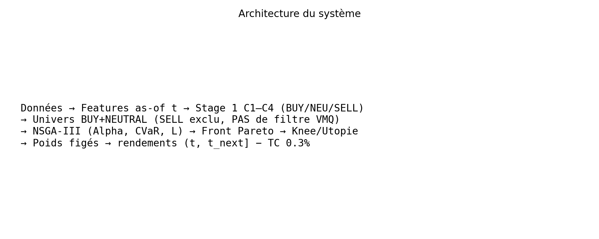
Walk-forward 14 blocs, train 36 mois, test 6 mois, expanding. Cible : alpha ajusté au risque. Pas de look-ahead : features, tau et scores strictement ≤ t. Fichier : 02_stage1_recommendations/stage1_recommendations_14blocks.parquet.
Ridge sur l’ensemble des features, sans conditionnement de régime. Cellule de référence « modèle linéaire statique ».
Même Ridge, scores conditionnés / adaptés au régime de marché (HMM du projet). Les hyperparamètres restent ceux du protocole factoriel, non retouchés.
Hybride Ridge + forêt aléatoire (pondération 50/50 du projet), sans régime.
Hybride + régime. Spécification principale du plan factoriel. Évaluée exactement avec les mêmes dates, univers (SELL exclu), NSGA, Knee, frais et benchmarks que C1–C3.
Excès = prédiction (benchmark interne 0). BUY si > +τ, SELL si < −τ, sinon NEUTRAL. τ = quantile 0,33 des |pred| des plis strictement antérieurs (expanding). SELL est exclu de l’univers Stage 2. BUY et NEUTRAL restent investissables (préférences 1,0 et 0,5).
Cible Stage 1 : alpha_ajuste_risque = (r_titre_forward − r_MASI_forward) / vol_baissiere_20j. Objectif NSGA : maximiser score_opt = predicted_return × préférence.
CVaR 95 % historique des rendements journaliers du portefeuille candidat, lookback 504 séances, historique filtré date ≤ as_of. Objectif : minimiser la CVaR. Rapportée aussi comme métrique de backtest (queue des rendements nets réalisés).
La liquidité n’est pas un filtre d’éligibilité. Elle n’intervient que comme troisième objectif Pareto : maximiser L pondéré du portefeuille, L = sigmoïde(VMQ_20j). Aucun seuil VMQ ≥ 500k.
Formule figée : vmq_20j = rolling_mean_20(prix_cloture × titres_echanges.fillna(0)), min_periods=20. Le fillna(0) sur le volume est la formule technique existante (volume manquant = 0 dans la moyenne), pas une interpolation par le futur. Les VMQ NaN restants correspondent à moins de 20 séances. Couverture dans 01_protocol/liquidity_coverage_by_year.csv : le fichier features commence en 2015-06-03 ; 2010–2014 n’a pas de VMQ dans le pipeline Stage 1/2.
L = 1 / (1 + exp(−k (VMQ − m))) avec k = 8/500000, m = 250000 (inchangés). L(0) ≈ 0,018 ; L(250k) = 0,5 ; L(500k) ≈ 0,982. Voir 01_protocol/sigmoid_reference.csv.
Population 36, 30 générations, w ∈ [0 ; 40 %], somme des poids = 1. Trois objectifs en mode principal (liquidity_mode=pareto) : max Alpha, min CVaR, max L. Version A de robustesse : deux objectifs seulement (liquidity_mode=none). Graine / implémentation projet inchangée.
Le front complet est persisté pour chaque mois et chaque cellule : 03_stage2_pareto/stage2_pareto_objectives.parquet et stage2_pareto_weights.parquet (identifiant de solution, poids, Alpha, CVaR, L, n positions, flags knee / max α / min CVaR / max L).
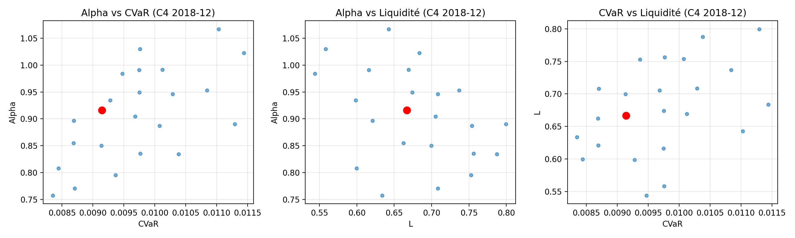
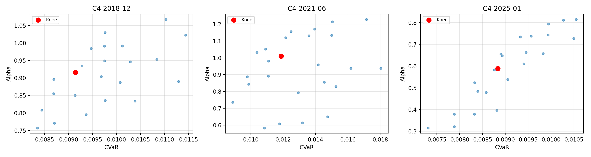
Méthode principale. Normalisation min-max du vecteur F (tous minimisés : −α, CVaR, −L). Utopie = 0. Choix = argmin de la distance euclidienne. Aucun rendement futur. Détail : 01_protocol/knee_algorithm.md. La règle ideal_distance du code est identique ; le profil « composite / équilibré » coïncide donc avec le Knee (règle E ≡ A).
À chaque date de rebalancement (dernier jour de bourse du mois de décision), le Knee fournit les poids. Positions inférieures au plancher de reporting sont dans les parquets complets. Turnover L1 vs portefeuille précédent ; coût = 0,003 × turnover (inchangé).
Poids déterminés avec données ≤ t, appliqués aux rendements réalisés sur l’intervalle ouvert (t, t_next]. Dernier mois : jusqu’au dernier prix disponible (cours jusqu’en 2026-05). Frais débités le premier jour de la fenêtre de détention. Fichiers : 05_backtest/.
MASI : mêmes dates de détention. Equal Weight : équipondération de l’univers BUY+NEUTRAL de la même cellule le même mois (pas de filtre VMQ), mêmes frais. EW_C4 est le benchmark « univers C4 ».
Rendement total et annualisé, volatilité annualisée, Sharpe, Sortino, CVaR, Max DD, turnover moyen, L moyenne, nombre moyen de positions, % de mois positifs, richesse finale (base 100), rendement mensuel moyen. Figures : richesse, drawdown, nuages rendement/risque, rendement/L, rendement/CVaR, distribution mensuelle.
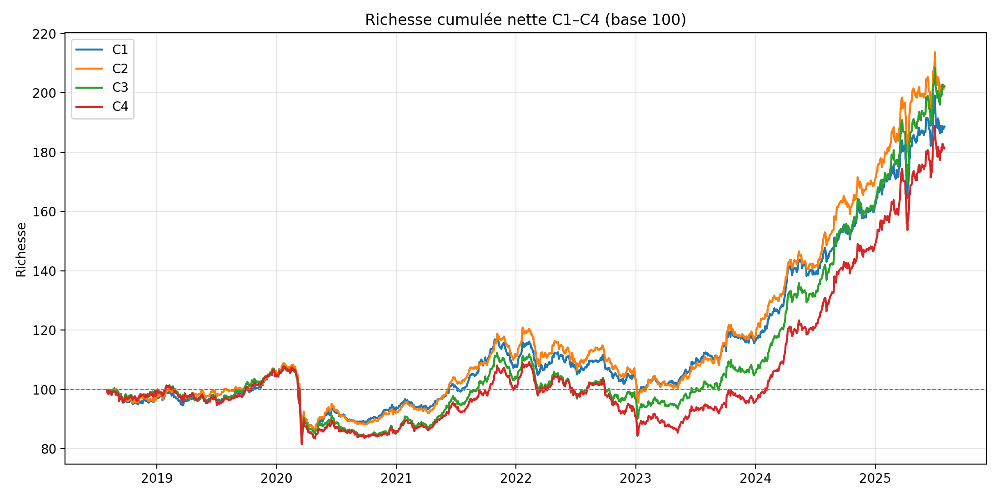
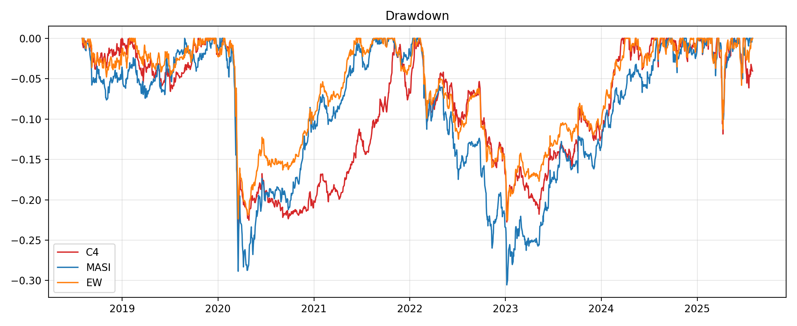
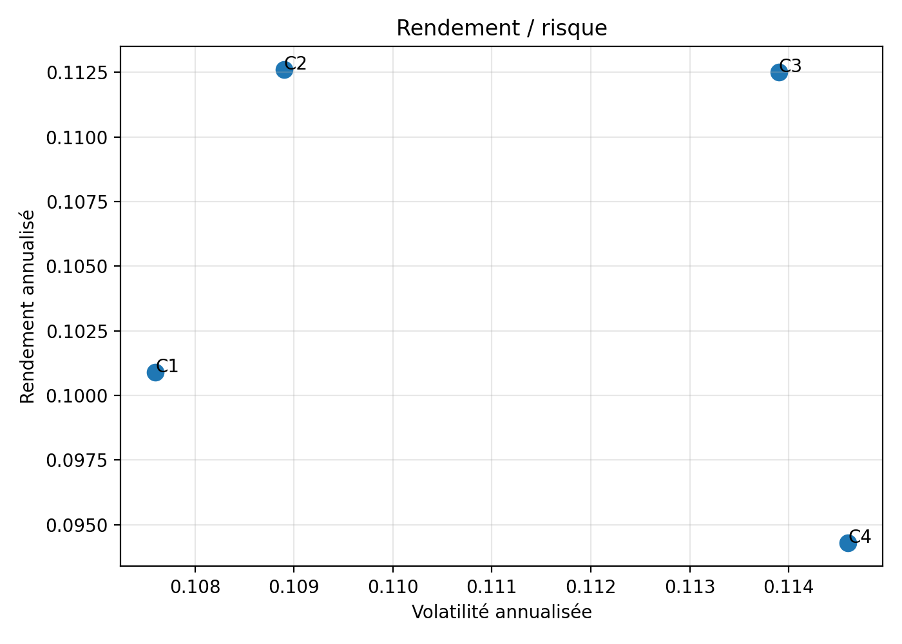
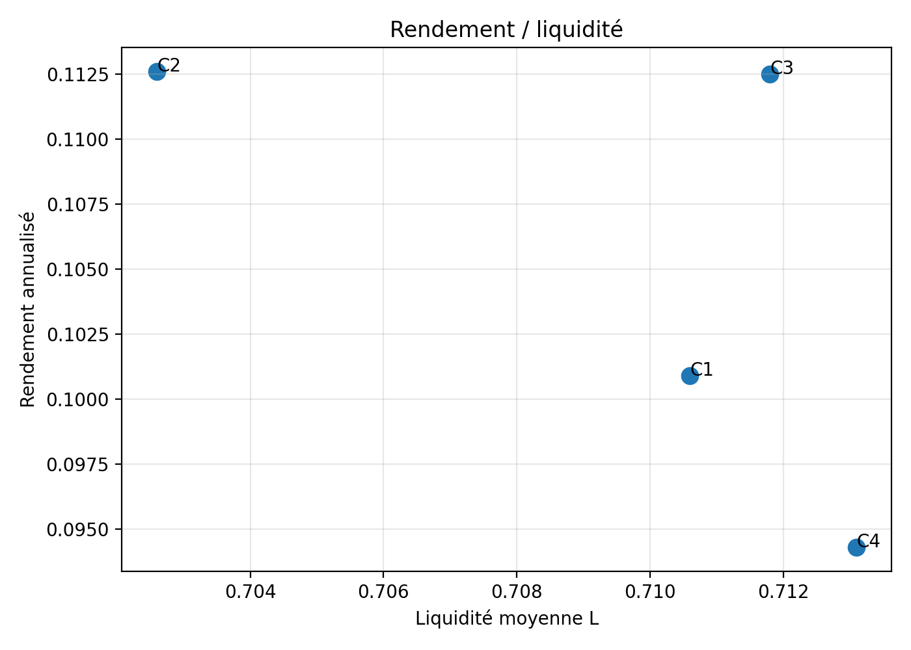
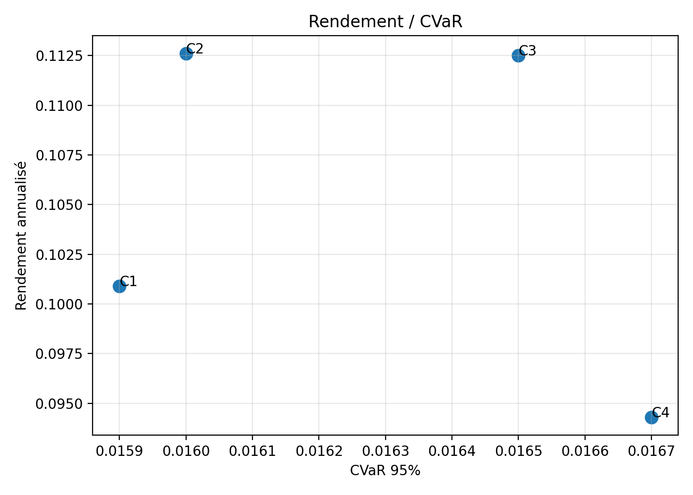
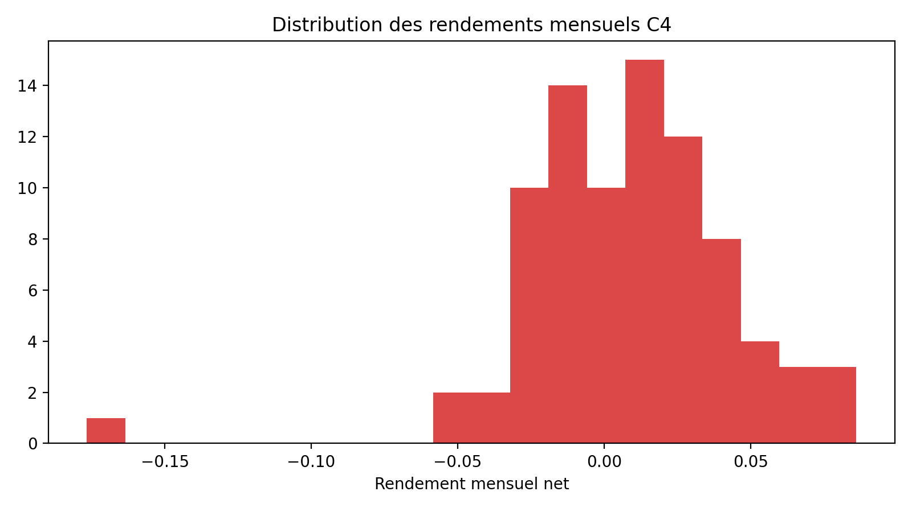
Différence mensuelle nette, IC 95 % bootstrap (10 000), t-test apparié, Wilcoxon, % de mois A > B. Seuil 5 %. On ne conclut à une supériorité statistique que si les deux tests ont p < 5 % (règle conservative ; un seul p < 5 % est signalé mais insuffisant).
| Comparaison | Δ mensuel | IC95 | % A>B | p t | p Wilcoxon | Signif. 5 % (les deux) |
|---|---|---|---|---|---|---|
| C4 − MASI | +0,60 pp | [+0,014 ; +1,20] pp | 60,7 % | 0,0497 | 0,0546 | Non |
| C4 − EW C4 | +0,15 pp | [−0,29 ; +0,60] pp | 50,0 % | 0,51 | 0,67 | Non |
| C4 − C1 | +0,24 pp | inclut 0 | 59,5 % | 0,12 | 0,09 | Non |
| C4 − C2 | +0,23 pp | inclut 0 | 53,6 % | 0,19 | 0,26 | Non |
| C4 − C3 | +0,15 pp | inclut 0 | 52,4 % | 0,14 | 0,12 | Non |
Importance économique ≠ significativité statistique. L’écart C4 vs MASI est économiquement large ; la preuve statistique à 5 % n’est pas robuste (Wilcoxon juste au-dessus du seuil).
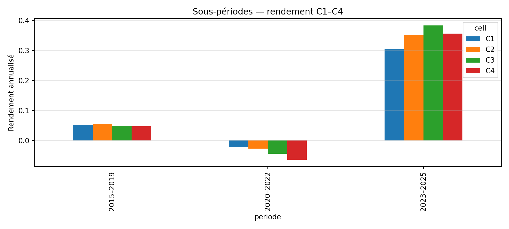
| Cellule | Période | n | Rend. ann. | Vol | Sharpe | Sortino | CVaR | Max DD | Turnover | L |
|---|---|---|---|---|---|---|---|---|---|---|
| C1–C4 | 2010–2014 | 0 | Impossible (pas de Stage 1) | |||||||
| C4 | 2015–2019* | 18 | 4,35 % | 8,8 % | 0,53 | 0,90 | 0,012 | −8,9 % | 0,94 | 0,66 |
| C4 | 2020–2022 | 36 | −0,66 % | 12,8 % | 0,01 | 0,02 | 0,020 | −25,1 % | 1,14 | 0,71 |
| C4 | 2023–2025 | 30 | 35,48 % | 14,3 % | 2,20 | 3,72 | 0,020 | −11,9 % | 0,93 | 0,90 |
*2015–2019 réduit à 2018-07 → 2019-12. Table complète : 08_robustness/subperiods_C1C4.csv. En 2020–2022, C4 est la seule cellule proche de 0 (C1–C3 nettement négatifs).
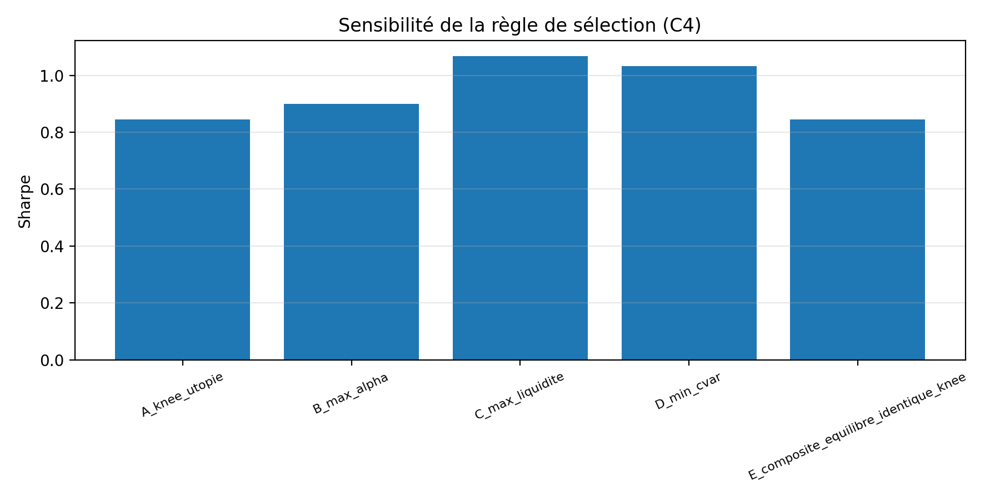
| Règle | Rend. ann. | Sharpe | CVaR | Max DD | L |
|---|---|---|---|---|---|
| A Knee / utopie (principale) | 14,10 % | 1,091 | 0,0185 | −25,5 % | 0,767 |
| B Max Alpha | 9,68 % | 0,759 | 0,0194 | −31,4 % | 0,683 |
| C Max liquidité | 13,73 % | 1,018 | 0,0201 | −26,9 % | 0,896 |
| D Min CVaR | 11,39 % | 1,041 | 0,0158 | −25,2 % | 0,581 |
| E Composite (= Knee) | 14,10 % | 1,091 | 0,0185 | −25,5 % | 0,767 |
Le Knee n’est pas remplacé. Il domine B et reste compétitif vs C et D (meilleur rendement que D, L plus élevée que D).
| Stratégie | n | R. tot. | R. ann. | Vol | Sharpe | Sortino | CVaR | Max DD | TO | L | Pos. | %+ mois | Richesse |
|---|---|---|---|---|---|---|---|---|---|---|---|---|---|
| C1 Ridge | 84 | 114 % | 11,04 % | 12,2 % | 0,92 | 1,44 | 0,018 | −23,1 % | 0,97 | 0,76 | 38,3 | 63 % | 214 |
| C2 Ridge+rég. | 84 | 116 % | 11,15 % | 12,6 % | 0,90 | 1,41 | 0,019 | −26,0 % | 0,98 | 0,76 | 37,3 | 64 % | 216 |
| C3 Hybrid | 84 | 129 % | 12,09 % | 12,8 % | 0,95 | 1,48 | 0,019 | −25,2 % | 1,01 | 0,76 | 30,6 | 63 % | 229 |
| C4 Hybrid+rég. | 84 | 161 % | 14,10 % | 12,9 % | 1,09 | 1,69 | 0,019 | −25,5 % | 1,02 | 0,77 | 30,7 | 67 % | 261 |
| MASI | 84 | 57 % | 6,15 % | 12,2 % | 0,55 | 0,81 | 0,019 | −30,5 % | — | — | — | 56 % | 157 |
| EW C4 | 84 | 134 % | 12,40 % | 11,2 % | 1,10 | 1,67 | 0,017 | −23,3 % | 0,53 | 0,66 | 34,8 | 68 % | 234 |
Parmi C1–C4, C4 a le meilleur rendement annualisé et le meilleur Sharpe. Le turnover NSGA reste élevé (~1,0 L1 / mois) : coût structurel du protocole, non modifié.
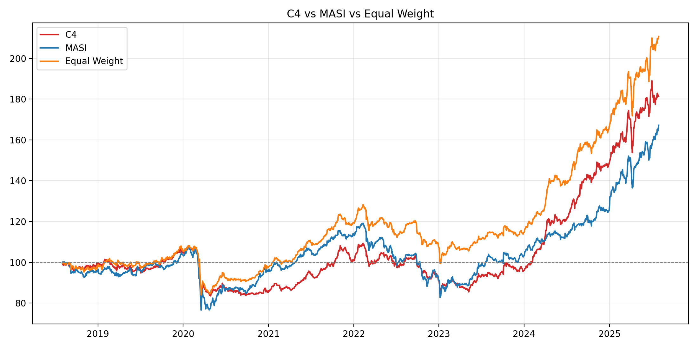
C4 : 14,10 % annualisé, Sharpe 1,09, richesse 261 vs MASI 6,15 %, Sharpe 0,55, richesse 157. Drawdown max −25,5 % vs −30,5 %. Écart mensuel moyen +0,60 pp ; IC bootstrap exclut 0 ; t-test p = 0,0497 ; Wilcoxon p = 0,0546. Conclusion : surperformance économique claire ; pas de supériorité statistique robuste à 5 % (Wilcoxon ≥ 5 %).
EW C4 (même univers BUY+NEUTRAL) : 12,40 % annualisé, Sharpe 1,104 (légèrement supérieur), vol plus basse, turnover plus bas (0,53 vs 1,02), L plus basse (0,66 vs 0,77). Différence mensuelle non significative (p ≈ 0,5). C4 gagne en rendement et en liquidité de portefeuille ; EW gagne en Sharpe/volatilité/coûts. Aucune conclusion de dominance statistique.
Comparaison pré-spécifiée, même calendrier, même Knee, sans filtre d’éligibilité.
| C4 | Objectifs | Rend. ann. | Sharpe | L | Max DD |
|---|---|---|---|---|---|
| Version A | Alpha + CVaR | 10,17 % | 0,871 | 0,548 | −24,1 % |
| Version B (principale) | Alpha + CVaR + L | 14,10 % | 1,091 | 0,767 | −25,5 % |
Corriger : Sharpe Version B = 1,091 (pas 0,091). L’introduction de L comme 3e objectif relève L de 0,55 à 0,77 et le rendement annualisé de 10,2 % à 14,1 % sur C4. Le même schéma (B > A en rendement et L) vaut pour C1 et C2 ; pour C3 le Sharpe de A est légèrement supérieur (0,974 vs 0,953) mais L et le rendement de B restent plus élevés. Table : 08_robustness/robustness_liquidity_objective.csv.
sigmoid_liquidity_factor (formule existante, documentée).Sur 84 mois OOS (2018-07 → 2025-06), avec liquidité en objectif Pareto uniquement, C4 est la meilleure cellule du plan C1–C4 (14,10 % annualisé, Sharpe 1,09). Elle bat économiquement le MASI, sans preuve statistique robuste à 5 %. Elle n’est pas statistiquement distincte de l’équipondération de son univers. L’objectif liquidité améliore L et, pour C4, le rendement, sans avoir servi de filtre d’exclusion. La robustesse temporelle est inégale : faiblesse 2020–2022, forte 2023–2025.
Le modèle opérationnel retenu pour la suite (plateforme, hors ce livrable) est C4 — Hybrid + régime, allocation NSGA-III 3 objectifs, sélection Knee / utopie, SELL exclu, pas de filtre VMQ ≥ 500k, coûts 0,3 %.
Ce choix est celui du protocole factoriel (cellule la plus complète) et il est cohérent avec le classement empirique C1–C4. Il n’implique pas une dominance statistique vs EW ou vs C3.